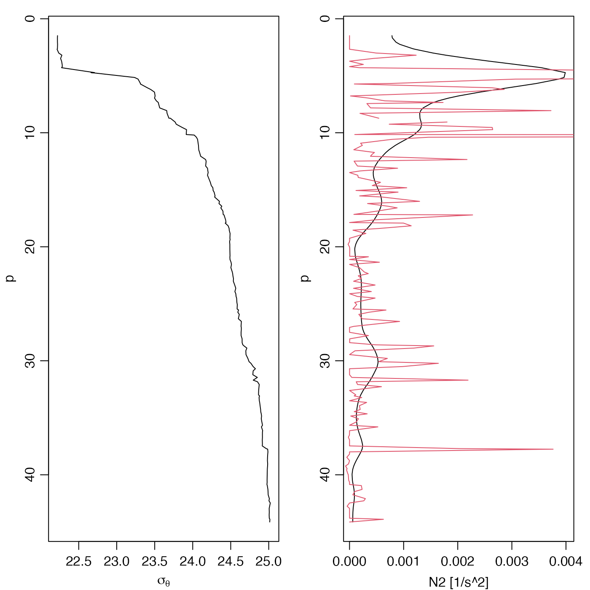

Compute \(N^2\), the square of the buoyancy frequency for a seawater profile.
swN2( pressure, sigmaTheta = NULL, derivs, df, debug = getOption("oceDebug"), ... )
| pressure | either pressure (dbar) (in which case |
|---|---|
| sigmaTheta | Surface-referenced potential density minus 1000 (kg/m\(^3\)). |
| derivs | optional argument to control how the derivative \(d\sigma_\theta/dp\) is calculated. This may be a character string or a function of two arguments. See “Details”. |
| df | argument passed to |
| debug | an integer specifying whether debugging information is
to be printed during the processing. This is a general parameter that
is used by many |
| ... | additional argument, passed to |
Square of buoyancy frequency (\(radian^2/s^2\)).
Smoothing is often useful prior to computing buoyancy frequency, and so this
may optionally be done with smooth.spline(), unless
df=NA, in which case raw data are used. If df is not
provided, a possibly reasonable value computed from an analysis of the
profile, based on the number of pressure levels.
The core of the
method involves differentiating potential density (referenced to median
pressure) with respect to pressure, and the derivs argument is used
to control how this is done, as follows.
If derivs is not supplied, the action is as though it were
given as the string "smoothing"
If derivs equals "simple", then the derivative of
density with respect to pressure is calculated as the ratio of first-order
derivatives of density and pressure, each calculated using
diff(). (A zero is appended at the top level.)
If derivs equals "smoothing", then the processing
depends on the number of data in the profile, and on whether df is
given as an optional argument. When the number of points exceeds 4, and
when df exceeds 1, smooth.spline() is used to calculate
smoothing spline representation the variation of density as a function of
pressure, and derivatives are extracted from the spline using
predict. Otherwise, density is smoothed using smooth(),
and derivatives are calculated as with the "simple" method.
If derivs is a function taking two arguments (first pressure,
then density) then that function is called directly to calculate the
derivative, and no smoothing is done before or after that call.
For precise work, it makes sense to skip swN2 entirely, choosing
whether, what, and how to smooth based on an understanding of fundamental
principles as well as data practicalities.
Until 2019 April 11, swN2 had an argument named eos. However,
this did not work as stated, unless the first argument was a ctd
object. Besides, the argument name was inherently deceptive, because the UNESCO
scheme does not specify how N2 is to be calculated.
Nothing is really lost by making this change, because the new default is the
same as was previously available with the eos="unesco"
setup, and the gsw-formulated estimate of N2 is provided
by gsw::gsw_Nsquared() in the gsw package.
The gsw::gsw_Nsquared() function of the gsw
provides an alternative to this, as formulated in the GSW system. It
has a more sophisticated treatment of potential density, but it is based
on simple first-difference derivatives, so its results may require
smoothing, depending on the dataset and purpose of the analysis.
Other functions that calculate seawater properties:
T68fromT90(),
T90fromT48(),
T90fromT68(),
swAbsoluteSalinity(),
swAlphaOverBeta(),
swAlpha(),
swBeta(),
swCSTp(),
swConservativeTemperature(),
swDepth(),
swDynamicHeight(),
swLapseRate(),
swPressure(),
swRho(),
swRrho(),
swSCTp(),
swSTrho(),
swSigma0(),
swSigma1(),
swSigma2(),
swSigma3(),
swSigma4(),
swSigmaTheta(),
swSigmaT(),
swSigma(),
swSoundAbsorption(),
swSoundSpeed(),
swSpecificHeat(),
swSpice(),
swTFreeze(),
swTSrho(),
swThermalConductivity(),
swTheta(),
swViscosity(),
swZ()
library(oce) data(ctd) # Left panel: density p <- ctd[["pressure"]] ylim <- rev(range(p)) par(mfrow=c(1, 2), mar=c(3, 3, 1, 1), mgp=c(2, 0.7, 0)) plot(ctd[["sigmaTheta"]], p, ylim=ylim, type='l', xlab=expression(sigma[theta])) # Right panel: N2, with default settings (black) and with df=2 (red) N2 <- swN2(ctd) plot(N2, p, ylim=ylim, xlab="N2 [1/s^2]", ylab="p", type="l")